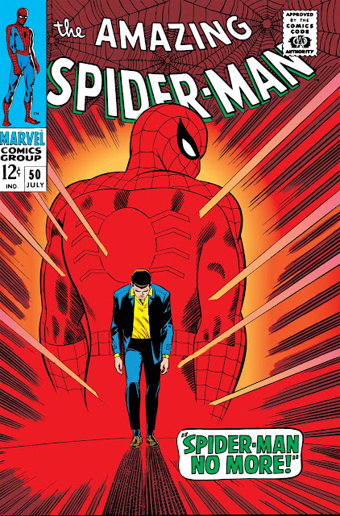
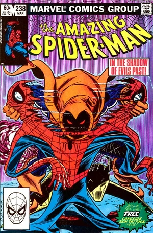
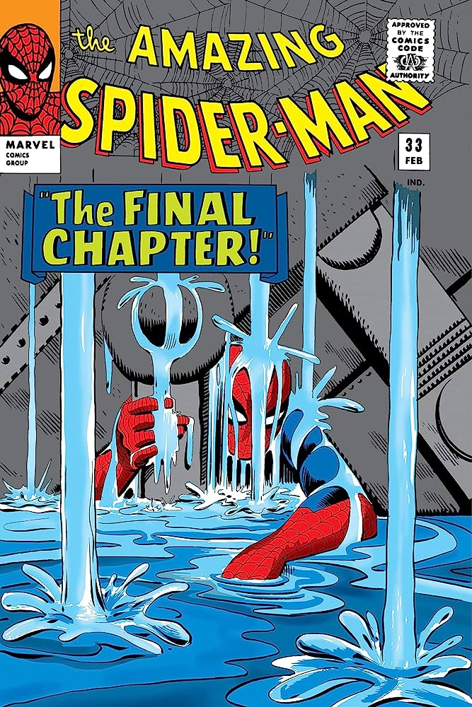

Who is the Spider-Man?
Spider-Man is one of the most iconic superheroes in Marvel Comics, created by Stan Lee and Steve Ditko in 1962. His importance and relevance in pop culture are undeniable, being a symbol of overcoming, responsibility and humanity. The character has won over millions of fans around the world with his exciting stories, personal dilemmas and unique powers. His journey as a hero, balancing the life of Peter Parker, continues to inspire generations, making him a timeless cultural icon with a significant impact on the world of entertainment.
Amazing Fantasy
Spider-Man, the alter ego of Peter Parker, is a superhero appearing in comic books published by Marvel Comics. Created by writer/editor Stan Lee and writer/artist Steve Ditko, Spider-Man first appeared in Amazing Fantasy #15 during the Silver Age of Comic Books.
Often a loner, Spider-Man is a stalwart member of the superhero community who has gained numerous allies such as the Fantastic Four and the Avengers. He has made numerous supervillains his personal enemies, including Doctor Octopus, Electro, Kraven the Hunter, Mysterio, Venom, and most famously, his nemesis the Green Goblin, who once killed Peter's girlfriend Gwen Stacy. Peter's support network extends to his civilian life, including Mary Jane Watson, Harry Osborn, Flash Thompson, and J. Jonah Jameson, though the latter often ran a smear campaign against the wall-crawler in his newspaper, the Daily Bugle.
Most remarkable stories:

- Kraven's Last Hunt
The story was very interesting, due to the suspenseful narrative by J.M. DeMatteis, with drawings by Mike Zeck, who used a lot of silent and cinematic sequences, in more realistic lines; and for the fact that it showed, for the first time, that Spider-Man may be able to overcome death itself. The perspective of the plot from Kraven's point of view was also a bonus and the publication format, which can be considered premium for line magazines, spread over two months in the three monthly titles of the Arachnid at the time (The Amazing Spider-Man, The Spectacular Spider-Man and Web of Spider-Man). The result was exquisite and, to this day, is one of the most acclaimed stories of the Wall-Crawler of all time.

- Spider-Man never again!
The cover of Amazing Spider-Man #50 (1967) is one of the most famous and this issue, in particular, had a direct influence on Sam Raimi's Spider-Man 2 (2004). Just as it appeared on the big screen, Peter Parker one day decides that the life of a hero is no longer for him, abandoning the Wall-Crawler's uniform in a trash can in a dark alley in New York. Once again, the plot teaches us that Peter Parker's altruism is unshakable: it is what makes him, once again, don the costume of the Friendly Neighborhood Spider-Man, no matter what consequences this may bring to his personal life.

- The Hobgoblin Saga
Everyone remembers the Green Goblin the most, but the original Hobgoblin also gave Spider-Man a lot of work. As it was getting boring to explore only Norman Osborn, writer Roger Stern decided to create a different version in Amazing Spider-Man #249 (1984): instead of the chaos of the Green Goblin, the Hobgoblin was cold and calculating. Stern's text created a great mystery about the villain's true identity and the readers' great fun, at the time, was trying to guess who the Hobgoblin was. At least three people were very suspicious and the revelation was even changed, to increase the suspense. In the end, we learn that Roderick Kingsley was the one who had been scaring the population.

- The Master Planner Saga
This is a classic tale that establishes the myth of Spider-Man, who, no matter how much he gets beaten up by life, will always find unlikely strength in his character, his responsibilities and his unshakable faith in justice and altruism. The scenes from this comic are so iconic that they have been reproduced several times on the big and small screens: in Spider-Man: Homecoming (2017), for example, there is a sequence that reproduces the pages of the comics. Peter is defeated, under rubble, and seems to no longer have the strength to get up. Then he says: "Anyone can win a fight when the odds are favorable! It's when things are tough, when there seems to be no chance, that's what matters!", before getting back on his feet once again. This is the Spider-Man that people love.